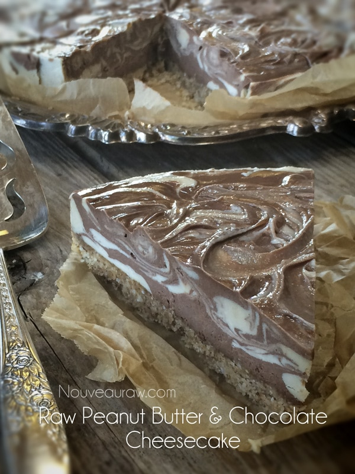
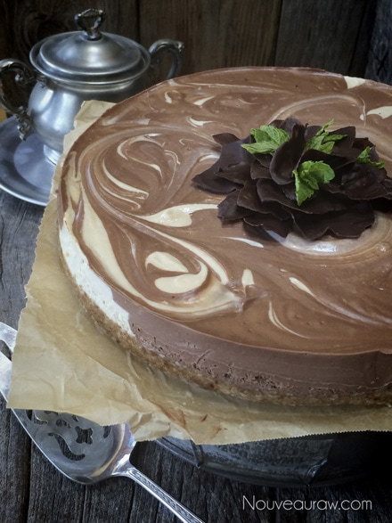
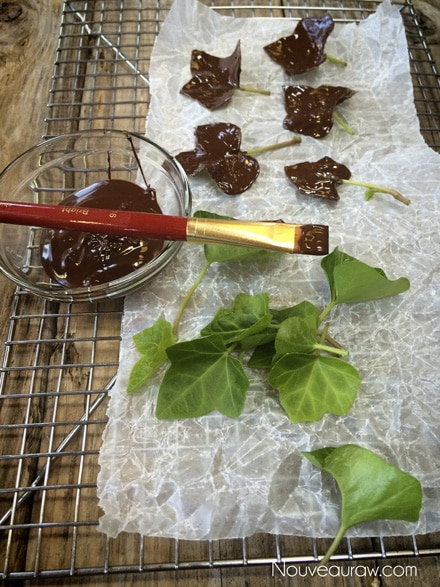
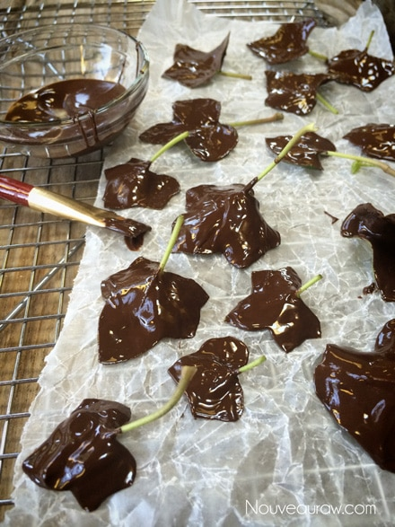
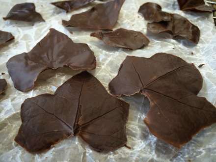
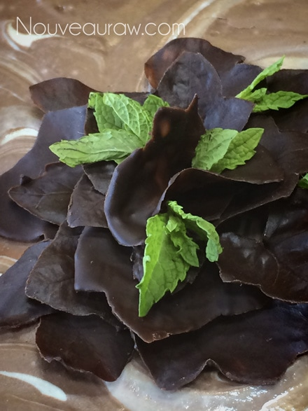
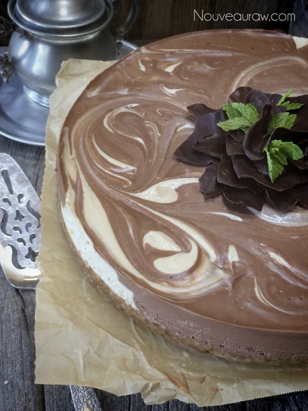

Peanut Butter & Chocolate Marble Cheesecake

~ raw, vegan, gluten-free ~
This recipe quickly became a favorite around here. And before two weeks had passed, I made four of these cheesecakes. As you can see in the photos, each one turned out looking a little different. All were beautiful, so use this as a lesson… allow your creativity to flow, you never know where it will take you.
Two for the work of One
First of all this recipe makes two cheesecakes. You can always scale the recipe down, but to be honest, making two right off the bat isn’t such a bad thing. Make one to enjoy now and put the other one in the freezer. They will keep for up to 3 months! Then when unexpected guests pop in… you can pamper them (and impress them) with a slice of cheesecake.
You could even go as far as making a bunch of small cheesecakes or even an assortment of sizes. I can’t express enough just how important it is to just have fun with the process.
Let’s chat a little bit about peanuts. I know that some of you can’t or just won’t eat them and are wondering if you could use a different nut. The answer is… you betcha’. Every different nut will give the cheesecake a different flavor… nothing wrong with that.
You will soon see that I used two different forms of peanuts in the crust recipe. I had hoped to make my own peanut butter with the raw jungle peanuts that I had but after everything was ready to go, I realized that I didn’t have enough. So, I ended up using roasted, organic, fresh ground peanut butter for the bulk of the recipe. If you don’t have any of the jungle peanuts, you can replace them with almonds in the crust. This is why I LOVE raw foods so much. It is so forgiving.
Below, you will see some photos of me painting chocolate onto leaves. This was just one of the ways that I decorated the top. This is optional. Enjoy my friends.
2 – 6 or 8″ Springform pan
Crust:
- 1 1/2 cups ground almonds, soaked & dehydrated
- 1/2 cup raw jungle peanuts
- 1/2 cup shredded coconut
- 1/2 cup natural peanut butter
- 1/4 cup maple syrup
- 1/4 tsp Himalayan pink salt
Filling base: makes 5 cups
- 1 cup water
- 3 cups cashews, soaked 2+ hours
- 3/4 cup maple syrup
- 1 Tbsp vanilla extract
- 1/4 tsp Himalayan pink salt
- 3/4 cup coconut oil, melted (add at the end)
Chocolate filling:
- 2 1/2 cups filling base
- 1/2 cup raw cacao powder
- 2 Tbsp liquid sweetener
- 1 1/2 Tbsp sunflower lecithin powder
Peanut butter layer:
- 2 1/2 cups filling base
- 1/2 cup natural peanut butter
- 1 1/2 Tbsp sunflower lecithin
Crust:
- Line the base of the pan(s) with parchment paper or plastic wrap. This will help with removal when the time comes.
- In the food processor, fitted with the “S” blade, process the almonds, peanuts, and coconut to a coarse meal texture.
- Add peanut butter, sweetener, and salt. Process until the batter sticks together when pinched.
- Be careful that you don’t over-process the nuts. This will release too much of their natural oils.
- Press crust into the base of the pan. Set aside
Filling base:
- The filling base makes 5 cups of cheesecake batter, this will be divided in half after it is all blended.
- Once the cashews are through soaking, drain, and discard the soak water.
- In a high-powered blender combine the water, cashews, sweetener, vanilla, and salt. Blend until creamy.
- One of the beautiful things about a cheesecake is the velvety texture, so blending till creamy is very important.
- If you don’t have a high power blender (Vitamix or Blendtec), you may need to stop the machine for a bit so the batter doesn’t overheat.
- To test for smoothness, turn the unit off and rub a little batter between your finger and thumb. If you detect any grit, keep blending.
- Once the batter is smooth, keep the blender running, with a vortex going, and drizzle in the coconut oil. Blend just until incorporated.
- Divide the batter in half, leaving one portion in the blender carafe.
Chocolate filling:
- Blend together 2 1/2 cups of the filling base, along with the cacao, sweetener, and lecithin.
- You can use liquid (sunflower based) or powder lecithin (sunflower or soy-based). You will use the same measurement regardless.
- Pour the batter into a bowl and set aside.
Peanut butter layer:
- Add the other 2 1/2 cups of batter to the blender, along with the peanut butter and lecithin. Blend until incorporated.
Assembly:
- Now the fun part. Grab your pan(s) and set them in front of you.
- Take a measuring cup (1/4 – 1/2 cup in size) and alternate scoops of each batter into the pan.
- Don’t be afraid of layering them, or nudging them up against one another… because when all the batter is used up, you will take a skewer stick and swirl them together. Swirl a lot or not very much, your call… you can create many different effects.
- Once you have used up all the batter, gently tap the pan(s) on the countertop to bring up any air bubbles. Cover and place in the fridge overnight or in the freezer.
- The cheesecake should last 3-4 days in the fridge or in the freezer for several months.
- Tip: How to slice a cake. Click here.

The next day I made another one. I smoothed out the top more and added
some decoration so I thought I would share it with you.

For some added flare, I added chocolate painted leaves on top.





© AmieSue.com